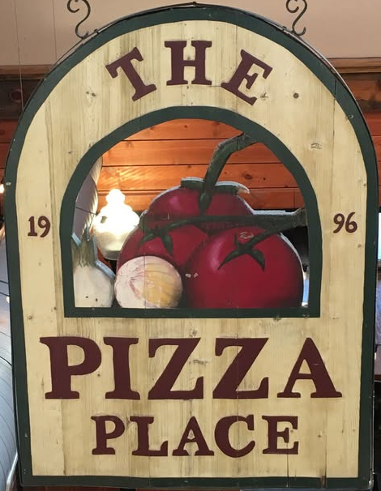

Hand-tossed pizza
House special, meat eaters, Hawaiian, BBQ and veggie pizzas.
Ask about hand-tossed pizza →
Pizza PlaceBig, thick hand-tossed pizzas, calzones and subs on Main Street, with booths for the whole family.
House special, meat eaters, Hawaiian, BBQ and veggie pizzas.
Ask about hand-tossed pizza →Calzones, pulled pork subs and Italian sausage sandwiches.
Ask about calzones & subs →Garlic cheese bread, cinnamon sticks and dessert pizzas.
Ask about garlic bread & desserts →A hidden gem. It was so good we went back the next night. Don't miss the cinnamon sticks with cream cheese dip.
They delivered a great meal exactly at the time requested for our son-in-law working in Lusk.
214 S Main, Lusk, WY 82225
Call nowGet directionsEmail thepizzaplaceluskwyoming@gmail.comFacebook page| Monday | Closed |
|---|---|
| Tue–Sat | 4–9 PM |
| Sunday | Closed |